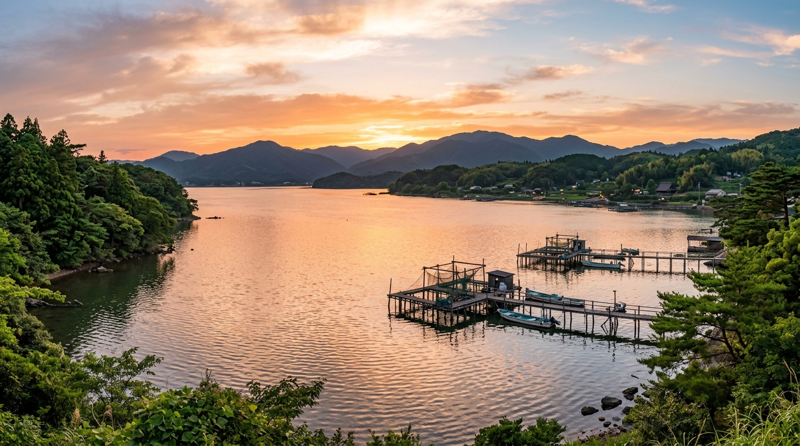
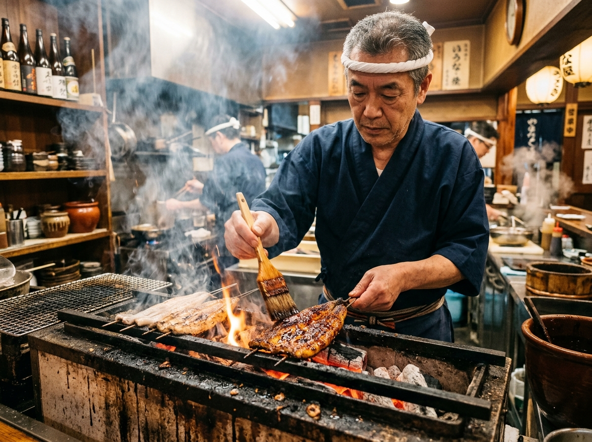
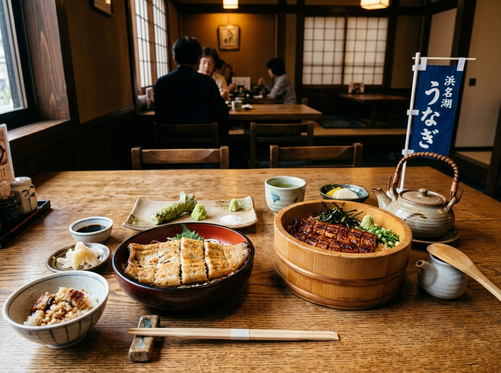

うなぎ養殖発祥の地・浜名湖の歩み
日本のうなぎ文化を決定づけた明治の挑戦。なぜ浜名湖が「うなぎの聖地」と呼ばれるようになったのか、その120年を超える物語を紐解きます。

之湖
服部倉治郎の情熱と浜名湖の奇跡
明治33年、服部倉治郎が浜名湖畔（現在の浜松市西区）に約7ヘクタールの養鰻池を造成し、クロコ（シラスウナギ）の人工養殖に成功したことが、日本の近代養鰻業の幕開けとなりました。
浜名湖は遠州灘と繋がり、栄養豊富なプランクトンや稚魚が生息する国内有数の汽水湖。温暖な日照と良質な天然水に恵まれたこの地は、まさにうなぎにとっての「理想郷」でした。
浜名湖での養鰻スタート
服部倉治郎が浜名湖で原種シラスウナギからの養殖を確立。全国へ養鰻技術が広がる。
全国屈指のブランドへ定着
南アルプス伏流水を使った「立場（泥抜き水槽）」の導入により、臭みのない極上の肉質を確立。
地域ブランド認定と持続可能性
地域団体商標「浜名湖うなぎ」として保護され、伝統技法の継承と資源保護の取り組みを推進。
浜名湖うなぎが圧倒的に美味しい4つの理由
口に入れた瞬間に広がるふっくらとした柔らかさ、香ばしい脂の甘み。他の産地とは一線を画す美味しさには、明確な秘密があります。
地下400mの清冷な名水で
「泥抜き・身締め」
浜名湖のうなぎは出荷前に、南アルプスや天竜川水系の清らかな冷鉱泉・地下水を絶えず掛け流す「立場（たてば）」と呼ばれる専用水槽に数日間泳がせます。これにより泥臭さが完全に消え、適度に身が引き締まり清らかな味わいが完成します。
全国屈指の日照時間と
温暖な気候風土
浜松・浜名湖地域は年間日照時間が全国トップクラス。温暖な気候のもとでのびのびと育つため、ストレスがなく病気になりにくい健康なうなぎが育ちます。
職人の目利きと
厳選ブレンド飼料
100年以上のノウハウを受け継ぐ養鰻家が、うなぎの成長段階や季節の水温変化に合わせて餌の配合を微調整。魚粉やビタミン、ミネラルを黄金比率で与え、良質な脂質と繊細な肉質を育て上げます。
皮が薄く脂が甘い
「黄金の身質バランス」
浜名湖うなぎの最大の特徴は「皮が柔らかく、箸ですっと切れる」こと。厚すぎず薄すぎない皮と、しつこさのない上品で澄んだ脂が炭火焼きの香ばしさを最高潮に引き立てます。
関東風と関西風が交わる唯一無二の街
日本の中心に位置する浜松・浜名湖は、背開き・蒸しの「関東風」と腹開き・地焼きの「関西風」の双方が共存する全国でも極めて稀有なうなぎ文化の交差点です。

「串打ち三年、裂き八年、焼きは一生」
一匹一匹の脂と火と対話し、最高の瞬間を見極める。
関東風：背開き ✕ 白焼き ✕ 蒸し ✕ 本焼き
関西風：腹開き ✕ 地焼き（直火・蒸さず）
同じ浜名湖うなぎでも、お店によって関東風・関西風それぞれの名匠が腕を振るっています。ランチとディナーで東西の食べ比べができるのも浜松観光の最大の醍醐味です。
浜名湖うなぎを極める4大名物料理
王道の「うな重・蒲焼」から、水と素材が良い浜名湖だからこそ輝く「白焼」、そして出汁と薬味で楽しむ「ひつまぶし」まで。

浜名湖名物 白焼・ひつまぶし御膳うな重・蒲焼（かばやき）
芳醇な秘伝タレと炭火の薫香代々継ぎ足された秘伝の甘辛ダレを何度もくぐらせ、炭火で香ばしく照り焼きに。炊きたての熱々ご飯とタレの染みた米粒、そしてうなぎの脂が三位一体となる至福の逸品です。
白焼（しらやき）
【浜名湖名物】素材本来の旨みと甘みタレを一切つけず、炭火で素焼きにしたもの。泥臭さが皆無で脂の上質な浜名湖うなぎだからこそ真価を発揮する究極の食べ方。日本酒の肴としても絶大の人気を誇ります。
ひつまぶし
三度美味しい味変の贅沢おひつに入った刻みうなぎを4等分にし、①そのまま、②薬味（ネギ・海苔・わさび）を添えて、③特製のお出汁をかけてお茶漬け風に、④一番気に入った食べ方で締める贅沢スタイル。
肝焼き・うなぎボーン（骨せんべい）
通が愛する一品料理とカルシウム一匹から一つしか取れない貴重な肝を香ばしくタレ焼きにした「肝焼き」と、中骨をカリッと素揚げにした塩味の「うなぎボーン」。ビールや地酒が進む名脇役です。
今日のあなたにぴったりの「浜名湖うなぎ」診断
2つの質問に答えるだけで、今の気分やお好みに最高の食べ方をご提案します！
Q1 今日のメインのシチュエーションや気分は？
古くから愛される完全食・うなぎの栄養
万葉集にも詠まれたスタミナ源。ビタミンA、B群、DHA/EPA、コラーゲンが凝縮された天然のサプリメントです。
目と皮膚の健康・免疫維持
うなぎ1串（約100g）で成人が1日に必要とするビタミンAをほぼ満たすほど豊富。粘膜を保護し、風邪やウイルスへの抵抗力を高めます。
疲労回復・エネルギー代謝
糖質や脂質を効率よくエネルギーに変えるビタミンB群。夏バテ予防や日々の活力チャージに圧倒的な効果を発揮します。
血液サラサラ・脳の活性化
青魚に匹敵するほど良質なオメガ3脂肪酸（DHA・EPA）を豊富に含有。悪玉コレステロールを抑え、生活習慣病を予防します。
美肌効果・新陳代謝促進
皮の周辺にたっぷり含まれる良質コラーゲンと、細胞分裂を助ける亜鉛が若々しい肌と代謝をサポートします。
目指せ全問正解！浜名湖うなぎ検定
知れば知るほど美味しくなる！浜名湖うなぎの歴史や食べ方に関する全4問のクイズに挑戦してみましょう。
質問文がここに入ります
浜名湖うなぎを巡る4大エリアガイド
名店巡りと一緒に楽しみたい、浜名湖周辺の風光明媚な観光スポットとエリア特徴をご紹介します。
浜松駅・市街地エリア
新幹線停車駅周辺には、創業100年を超える老舗うなぎ店が密集。出張や旅行の合間に気軽に立ち寄れ、関東風・関西風の有名店が選べます。
- 📍 浜松城（徳川家康の出世城）
- 📍 遠州鉄道と繁華街のグルメ散策
かんざんじ温泉エリア
浜名湖を一望できるリゾート温泉地。湖畔に佇むうなぎ料理店が多く、絶景を眺めながらゆったりと贅沢な時間を過ごせます。
- 📍 かんざんじロープウェイ・大草山展望台
- 📍 はままつフラワーパーク
弁天島・舞阪エリア
今切口（海と湖がつながる水門）に近く、潮風が心地よいエリア。赤い大鳥居がシンボルの弁天島海浜公園があり、白焼や海鮮が絶品です。
- 📍 弁天島シンボルタワー（赤鳥居）夕景
- 📍 舞阪漁港の新鮮魚介とうなぎの直売所
三ヶ日・奥浜名湖エリア
三ヶ日みかんの産地としても有名な風光明媚な地域。天竜浜名湖鉄道（天浜線）のレトロな駅舎巡りと一緒に、隠れた名店探訪が楽しめます。
- 📍 国宝・龍潭寺（井伊直虎ゆかりの寺）
- 📍 天竜浜名湖鉄道ローカル列車旅
浜名湖うなぎに関するよくある質問
Q 浜名湖うなぎの「蒲焼」と「白焼」、初めてならどちらがおすすめ？
ご飯と一緒にがっつり味わう王道の感動なら「うな重・蒲焼」が一番おすすめです！
一方、お酒がお好きな方や「うなぎ本来の臭みのなさと甘みを試したい」という方には「白焼」をわさび醤油や岩塩で味わうのが浜名湖ならではの醍醐味です。迷った場合は両方が入った「紅白重（こうはくじゅう）」を提供しているお店もございます。
Q お取り寄せや真空パックの白焼・蒲焼を家で一番美味しく温める方法は？
【蒲焼のおすすめ温め方】
電子レンジではなく、アルミホイルに軽く酒（大さじ1）を振って包み、オーブントースターや魚焼きグリルで3〜4分温めると、皮がパリッとして身がふっくら蘇ります。
【白焼のおすすめ温め方】
フライパンやトースターで表面がカリッとするまで軽く焼き直すと、焼きたての香ばしさが戻り格別の味になります。
Q うなぎの旬はいつですか？夏以外も美味しいですか？
土用の丑の日の印象から「夏」のイメージが強いですが、浜名湖の養殖うなぎは最新の温度・水質管理により一年中いつでも最上級の品質が保たれています。
特に秋から冬にかけては脂が乗り、より濃厚でコクのある味わいになるため、冬のうなぎを好む食通も数多くいらっしゃいます。
Q 浜名湖うなぎには小骨はありますか？小さな子どもでも食べられますか？
うなぎには細い小骨がありますが、熟練の職人が下処理を行い、じっくりと炭火焼きや蒸しを入れることで骨まで柔らかく調理されているため、ほとんど気になりません。特に「関東風（蒸し）」は身がふわふわで口当たりが優しく、お子様やご年配の方にも大変好評です。